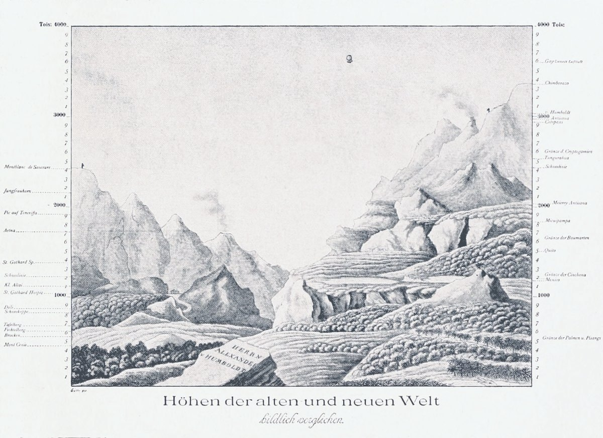

- База знаний
- Атлас помогающих профессий
- Как устроен атлас
Как устроен атлас
Помогающие специалисты — это люди, чья работа состоит в том, чтобы помогать другим людям справляться с жизнью: со здоровьем, переживаниями, отношениями, работой, деньгами, бытом, утратой, поиском смысла. Термин «помогающие профессии» (helping professions) давно используется в англоязычной литературе и объединяет очень разных специалистов — от психиатра до волонтёра хосписа.
Здесь собран весь этот ландшафт: 125 специалистов, разложенных по двум осям. Семья отвечает на вопрос, за какую сферу жизни отвечает специалист. Уровень — на чём держится его помощь в России и что он вправе делать. Между третьим и четвёртым уровнем проходит граница допуска: дальше начинаются диагноз, лечение и юридическая сила.
Атлас ничего не рекомендует и не оценивает конкретных людей. Он объясняет, кто есть кто, за что отвечает, с какими запросами работает и где заканчивается его зона. Всё, что не удалось проверить по первоисточникам, помечено знаком ∗.
Модель
125 специалистов по двум осям: 10 семей (за что отвечает) и 4 уровня (на чём держится помощь в России), плюс внешнее кольцо «Опора для помогающих». 10 практик — в отдельном слое. Данные собраны 27.10.2026. Как мы проверяем факты и что значат метки — в общем разделе «Как устроена база».
Уровни

1 · Опыт 11 специалистов
Даёт поддержку, присутствие, связи и ощущение «я не один». Не диагностирует, не лечит, не даёт профессиональных заключений. Примеры: равный консультант, волонтёр хосписа, спонсор в программах «12 шагов».
2 · Практика 62 специалиста
Самый населённый уровень. Подготовка здесь очень разная — от выходных курсов до многолетней сертификации, поэтому смотри на срез «подготовка». Даёт процесс, навыки, сопровождение, практическую помощь. Не лечит расстройства.
3 · Профессия 35 специалистов
Профессиональная помощь, методы и заключения в пределах профессии. Медицинского диагноза и лечения нет; документы с юридической силой выдаёт специалист с полномочиями (например, нотариус). Примеры: психолог, социальный работник, медиатор, юрист.
4 · Полномочия 17 специалистов
Диагноз, лечение и назначения, больничный, госпитализация; юридически значимые действия и документы. Примеры: врач, нотариус, арбитражный управляющий, уполномоченный по правам человека.
Правила размещения
Семья — предмет ответственности, а не запрос и не метод. Профессии, существующие ради ситуации (паллиатив, горе), живут в семье этой ситуации. Уровень — минимальное основание, без которого в России нельзя законно и добросовестно работать в роли. Одна карточка — одна роль с одним основанием. Равные — в семье своей темы на уровне «Опыт».
Маршруты по карте
Ландшафт за 10 минут
Психика: от равного до психиатра
Деньги и право в переходе
— не удалось проверить по первоисточнику
Если нашлась ошибка —напиши в Telegram.